청소년상담사-2급(1교시) (2018-10-06 기출문제)
1과목: 청소년 상담의 이론과 실제
1. 다음 질문기법을 사용하는 상담이론의 특성으로 옳지 않은 것은?
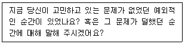
- 단기상담을 지향한다.
- 과거보다 현재와 미래에 초점을 맞춘다.
- 문제의 심층적 원인이나 근원에 주의를 기울인다.
- 내담자는 상담 전에 이미 변화할 준비가 되어 있다고 가정한다.
- 내담자를 전문가로 여기고 호기심 어린 자세와 가설적인 태도로 대한다.
(정답률: 58%)

2. 내담자가 상담자에 대한 좌절이나 분노를 표현하기 어려워 상담에 늦게 오는 행동은?
- 부인(denial)
- 저항(resistance)
- 투사(projection)
- 합리화(rationalization)
- 역전이(counter-transference)
(정답률: 77%)
3. 행동주의 상담기법과 적용이 옳게 연결된 것을 모두 고른 것은?
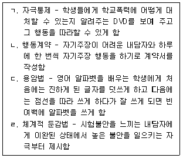
- ㄱ, ㄴ
- ㄱ, ㄷ
- ㄴ, ㄷ
- ㄱ, ㄴ, ㄷ
- ㄴ, ㄷ, ㄹ
(정답률: 59%)
4. 우리나라 청소년 상담 현황에 관한 설명으로 옳지 않은 것은?
- 학교 밖 청소년 지원을 위해 전국에 청소년지원센터 꿈드림을 설치하였다.
- 청소년뿐 아니라 청소년 주변인과 청소년 관련 기관도 청소년 상담활동의 대상으로 한다.
- 위기청소년을 위한 통합적 상담복지서비스를 제공하기 위해 지역사회 청소년 통합지원체계(CYS-Net)서비스를 시행하고 있다.
- 교육부는 학교상담을 지원하기 위한 기관으로 시ㆍ군ㆍ구에 청소년상담복지센터를 두고 있다.
- 청소년 상담 관련 국가자격증으로 청소년상담사가 있다.
(정답률: 68%)
5. 청소년 상담에 관한 설명으로 옳은 것은?
- 상담의 비밀보장을 위해 부모나 학교의 개입을 배제한다.
- 컴퓨터나 전화를 이용한 매체상담 등 다양한 방법을 활용하여 상담한다.
- 내담자의 건전한 발달과 성장을 위해 예방보다는 문제 발생 후 치료에 초점을 둔다.
- 청소년의 성격, 환경, 호소문제가 성인과 다르지 않으므로 성인상담의 축소판으로 본다.
- 청소년기의 자아중심성 때문에 대규모 집단 프로그램이나 교육은 비효과적이다.
(정답률: 74%)
6. 인간중심상담에서 제시한 심리적으로 건강한 사람의 특성으로 옳지 않은 것은?
- 자기결정성이 높다.
- 경험에 개방적이다.
- 생각, 감정, 행동이 일치를 이룬다.
- 자신이 처한 환경에서 충실히 살아간다.
- 자신에게 중요한 사람의 가치를 조건화한다.
(정답률: 79%)
7. 「청소년상담사 윤리강령」에 명시된 청소년상담사의 ‘품위유지 의무’ 항목에 해당하는 것은?(오류 신고가 접수된 문제입니다. 반드시 정답과 해설을 확인하시기 바랍니다.)
- 상담적 배임행위를 하지 않는다.
- 동종에 종사하는 자와 협력하여야 한다.
- 자신의 전문성을 유지하기 위해 법적으로 정해진 보수교육에 반드시 참여한다.
- 자신의 법적, 도덕적 한계를 벗어난 다중 관계를 맺지 않는다.
- 자격검정 및 연수 등 청소년상담사 자격제도 개선을 위해 노력한다.
(정답률: 23%)
8. 다음 내담자에 대한 REBT 상담자의 논박으로 옳지 않은 것은?
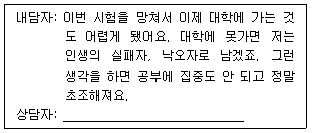
- 대학에 못가면 인생의 실패자라는 증거는 어디에 있나요?
- 대학에 못갈까봐 걱정하는 것이 당신에게 얼마나 도움이 되나요?
- 당신이 잠든 사이에 기적이 일어나서 모든 문제가 사라졌다고 상상해 보세요. 잠에서 깨었을 때 무엇이 달라져 있을까요?
- 만약 대학에 못가면 일어날 수 있는 가장 최악의 상황은 무엇인가요?
- 누구나 반드시 대학에 가야 하나요?
(정답률: 72%)
9. 실존주의 상담의 주요개념에 해당되지 않는 것은?
- 죽음
- 고립
- 자유
- 책임
- 보상
(정답률: 77%)
10. 상담에 대한 사전동의(informed consent) 내용으로 옳지 않은 것은?
- 비밀보장과 비밀보장의 예외 상황
- 상담자의 학위와 경력, 이론적 지향
- 상담 약속과 취소 및 필요 시 연락 방법
- 내담자가 본인 상담 자료를 열람할 수 있는 권리
- 내담자가 상담으로부터 얻을 수 있는 이익과 성과에 대한 보장
(정답률: 48%)
11. 힐과 오브라이언(C. E. Hill & K. O'Brien)이 제시한 상담자의 주의집중 기술인 ‘ENCOURAGES’에 해당되지 않는 것은?
- 도구를 활용한 활동을 한다.
- 산만한 행동을 피한다.
- 고개를 끄덕인다.
- 내담자의 문법적 스타일에 맞춘다.
- 내담자 쪽으로 열린 자세를 유지한다.
(정답률: 68%)
12. 상담 종결기의 상담자 질문으로 적합한 것을 모두 고른 것은?
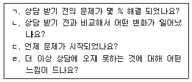
- ㄱ, ㄴ
- ㄴ, ㄷ
- ㄱ, ㄴ, ㄷ
- ㄱ, ㄴ, ㄹ
- ㄱ, ㄷ, ㄹ
(정답률: 84%)
13. 해석의 단계를 순서대로 옳게 나열한 것은?
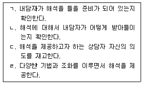
- ㄱ - ㄷ - ㄴ - ㄹ
- ㄱ - ㄷ - ㄹ - ㄴ
- ㄱ - ㄹ - ㄴ - ㄷ
- ㄷ - ㄱ - ㄴ - ㄹ
- ㄷ - ㄹ - ㄱ - ㄴ
(정답률: 71%)
14. 아들러(A. Adler)의 개인 심리치료에 관한 설명으로 옳지 않은 것은?
- 인간의 모든 행동에는 목적성이 있다고 본다.
- 인간 행동의 기본적인 목적은 열등감의 극복이다.
- 전체적 관점보다는 분석적 관점에서 인간의 개인성을 강조한다.
- 생활양식은 개인이 지니는 독특한 삶의 방식으로 가족 경험에 의해 영향을 받는다.
- 출생순위는 성격형성 과정에 중요한 요인이지만 가족 내 역할과 심리적 출생순위가 더 중요하다.
(정답률: 60%)
15. 다음 대화에서 상담자가 사용하는 기법은?
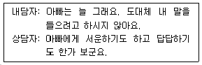
- 투사
- 직면
- 해석
- 재진술
- 감정반영
(정답률: 65%)
16. 청소년 내담자의 인지적 특성에 관한 설명으로 옳지 않은 것은?
- 이상주의와 흑백논리를 갖기 쉽다.
- 가설적, 연역적 사고를 할 수 있다.
- 체계적, 조합적 사고를 할 수 있다.
- 추상적 사고가 발달하고 메타인지적 사고가 가능하다.
- 형식적 조작사고 발달에 의해서 전환적 추론(transductive reasoning)을 하게 된다.
(정답률: 54%)
17. 상담 과정 및 기법에 관한 설명으로 옳은 것은?
- 상담 구조화는 중기 이후에 진행하는 것이 안전하다.
- 종결단계에서는 내담자의 주요 변화 요인을 평가한다.
- 내담자의 호소문제가 완전히 해결되어야 종결할 수 있다.
- 직면은 공감이 배제된 상태에서 제시하는 것이 효과적이다.
- 해석으로 제공되는 내용은 상담자의 준거체계에 맞추어야 효과적이다.
(정답률: 79%)
18. 상담기법과 그 예로 옳은 것을 모두 고른 것은?
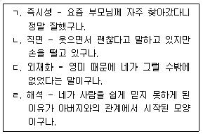
- ㄱ, ㄴ
- ㄴ, ㄹ
- ㄷ, ㄹ
- ㄱ, ㄴ, ㄷ
- ㄱ, ㄴ, ㄷ, ㄹ
(정답률: 65%)
19. 상담자의 상담 단계별 과업으로 옳은 것은?
- 초기: 내담자의 기대 조정
- 초기: 성과 평가
- 중기: 추수회기
- 종결: 접수면접
- 종결: 호소문제 탐색
(정답률: 82%)
20. 현실치료에 관한 설명으로 옳지 않은 것은?
- 유머를 적절하게 사용하는 것을 권장한다.
- 의도적으로 능동태 또는 진행형 동사를 많이 사용한다.
- 은유적 표현을 지양하고 현실적인 표현에 귀 기울인다.
- 부정적인 것을 줄이기보다 긍정적인 것을 늘리는 데 초점을 맞춘다.
- 내담자의 말과 행동이 일치하지 않는 것을 인식시켜 자신의 말과 행동에 책임지게 한다.
(정답률: 54%)
21. 교류분석에 관한 설명으로 옳은 것을 모두 고른 것은?
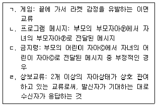
- ㄱ, ㄴ
- ㄷ, ㄹ
- ㄱ, ㄷ, ㄹ
- ㄴ, ㄷ, ㄹ
- ㄱ, ㄴ, ㄷ, ㄹ
(정답률: 32%)
22. 게슈탈트 상담의 접촉 경계 혼란에 관한 설명으로 옳지 않은 것은?
- 자의식: 자신에 대해 지나치게 의식하고 관찰하는 것
- 투사: 자신의 사고, 욕구, 감정을 타인의 것으로 왜곡하여 지각하는 것
- 편향: 환경과의 접촉으로 인한 결과가 두려워 피하거나 감각을 둔화하는 것
- 반전: 타인의 관점이나 주장을 깊이 생각해보지 않고 자신의 것으로 받아들이는 것
- 융합: 밀접한 두 사람이 서로의 경계를 인정하지 않고 의존적 관계를 형성하는 것
(정답률: 67%)
23. 청소년 상담이론별 목표 진술로 옳은 것은?
- 인지치료: 가끔 실수하더라도 나는 괜찮다.
- 행동주의 상담: 착한 학생이 되도록 노력한다.
- 인간중심 상담: 부모님의 칭찬을 받기 위해 성적을 올린다.
- 여성주의 상담: 나의 심리적 취약성이 성 학대 발생의 원인임을 인식한다.
- 현실치료: 결국은 부모님으로 인해 나의 문제가 발생했다는 것을 인식한다.
(정답률: 63%)
24. 다음 대화에서 상담자가 취하고 있는 상담접근의 주요 개념에 해당되는 것은?
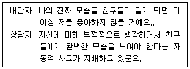
- 콤플렉스
- 알아차림
- 심리적 결정론
- 역기능적 인지도식
- 자기 부분과의 대화
(정답률: 76%)
25. 청소년 상담 이론별 목표와 기법의 연결이 옳은 것은?
- 열등감 극복 - 악동 피하기
- 기본욕구 충족을 위한 선택 - 대처카드
- 인생각본과 교류 변화 - 생활양식 분석
- 개성화와 성격의 통합 - 역기능적 사고 기록지
- 실존적 상황에 대한 자각증진 - 수치심 깨뜨리기
(정답률: 38%)
2과목: 상담연구방법론의 기초
26. 다음에 공통으로 해당하는 실험설계 방법은?
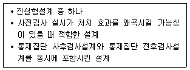
- 구획설계
- 배속설계
- 요인설계
- 라틴 정방형 설계
- 솔로몬 4집단 설계
(정답률: 46%)
27. 다음 내용에서 공통적으로 위반가능성을 내포하는 연구윤리는?
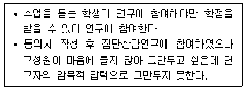
- 비밀유지와 사생활보호
- 고지된 동의
- 속임수의 사용
- 자율성의 원칙
- 진실성의 원칙
(정답률: 73%)
28. 통계적 결론 타당도를 저해하는 요인은?
- 통계적 가정의 충족
- 자료 중심의 투망질식 검정
- 측정도구의 높은 내적일치도
- 전집을 대표할 수 있는 표집방법의 사용
- 처치도구의 표준화
(정답률: 69%)
29. 다음 연구에서 독립변수와 종속변수의 척도를 옳게 짝지은 것은?
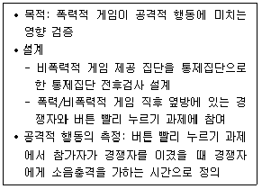
- 명명척도 - 등간척도
- 서열척도 - 등간척도
- 명명척도 - 서열척도
- 등간척도 - 비율척도
- 명명척도 - 비율척도
(정답률: 49%)
30. 링컨과 구바(Y. Lincoln & E. Guba)가 제시한 질적연구의 진실성(trustworthiness) 요건에 해당되지 않는 것은?
- 포화성
- 전이가능성
- 안정성
- 확증가능성
- 신뢰성
(정답률: 43%)
31. 다음에서 설명하고 있는 용어는?
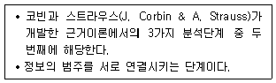
- 수평화
- 괄호화
- 개방코딩
- 선택코딩
- 축코딩
(정답률: 39%)
32. 과학적 방법에 관한 설명으로 옳지 않은 것은?
- 과학적 방법은 증거를 중시한다.
- 상식을 체계적으로 확대하여 발전시키면 과학이 될 수 있다.
- 과학적으로 검증된 이론은 행동을 안정적으로 예측하게 한다.
- 연역법을 활용한 과학적 방법에서는 특정한 자료에서 일반이론을 추론한다.
- 잘 확립된 이론이라도 조건과 환경의 변화로 반증될 수 있다.
(정답률: 55%)
33. 혼합연구방법에 관한 설명으로 옳은 것을 모두 고른 것은?
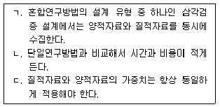
- ㄱ
- ㄷ
- ㄱ, ㄴ
- ㄴ, ㄷ
- ㄱ, ㄴ, ㄷ
(정답률: 64%)
34. 종속변수의 정규성 검토를 위한 방법이 아닌 것은?
- 샤피로윌크(Shapiro-Wilk)검정
- Box의 M검정
- 콜모고로프-스미르노프(Kolmogorov-Smirnov)검정
- 첨도
- 왜도
(정답률: 27%)
35. 연구자 A는 청소년 인권감수성 척도를 개발하고자 한다. 이 연구를 수행하기 위한 순서로 옳은 것은?
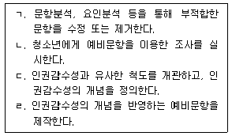
- ㄱ - ㄴ - ㄹ - ㄷ
- ㄴ - ㄹ - ㄷ - ㄱ
- ㄷ - ㄹ - ㄴ - ㄱ
- ㄹ - ㄴ - ㄱ - ㄷ
- ㄹ - ㄷ - ㄴ - ㄱ
(정답률: 63%)
36. 연구문제 및 가설에 관한 설명으로 옳은 것을 모두 고른 것은?
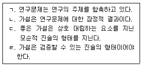
- ㄱ, ㄴ
- ㄴ, ㄷ
- ㄱ, ㄴ, ㄹ
- ㄱ, ㄷ, ㄹ
- ㄱ, ㄴ, ㄷ, ㄹ
(정답률: 60%)
37. 중학교 1학년에서 1,000명의 학생을 표집하여 매년 초에 1년에 1번씩 3년 동안 행복감을 반복 측정하였다. 표는 잠재성장모형을 활용하여 얻은 분석결과 중 일부이다. 유의수준 1%에서 해석한 것 중 옳지 않은 것은?
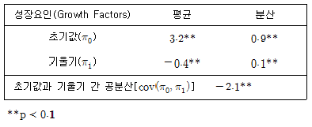
- 중학교 1학년에서의 행복감은 개인에 따라 차이가 있다.
- 행복감의 개인별 변화의 평균은 학년이 올라갈수록 떨어지는 경향이 있다.
- 행복감의 개인별 변화는 개인에 따라서 차이가 있다.
- 행복감의 개인별 변화의 개인 간 변산을 설명할 수 있는 독립변수를 추가적으로 탐색할 필요가 있다.
- 중학교 1학년에서 행복감이 낮은 학생일수록 행복감이 더 크게 떨어지는 경향이 있다.
(정답률: 38%)
38. 연구논문의 서론 및 이론적 배경에 포함될 내용으로 옳은 것을 모두 고른 것은?
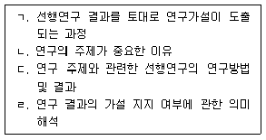
- ㄱ, ㄴ
- ㄷ, ㄹ
- ㄱ, ㄴ, ㄷ
- ㄴ, ㄷ, ㄹ
- ㄱ, ㄴ, ㄷ, ㄹ
(정답률: 46%)
39. 신뢰도에 관한 설명으로 옳지 않은 것은? (문제 오류로 실제 시험에서는 2, 4번이 정답처리 되었습니다. 여기서는 2번을 누르면 정답 처리 됩니다.)
- 신뢰도는 관찰점수분산에서 진점수분산이 차지하는 비율로 정의된다.
- 동일한 자료라면 Cronbach 계수, KR-21, Hoyt 신뢰도는 동일한 값이 산출된다.
- KR-20은 KR-21과 달리 이분(dichotomous)문항인 경우에만 활용할 수 있다.
- 신뢰도가 .80이라는 것은 100번을 측정했을 때 그 중 80번은 믿을 수 있는 값이 산출된다는 것을 의미한다.
- 반분신뢰도를 추정하는 과정에는 스피어만 브라운 공식으로 교정하는 절차가 포함된다.
(정답률: 39%)
40. 그림은 22명의 내담자를 상담자 A집단과 상담자 B집단에 각각 11명씩 무선배치한 다음, 프로그램 적용 후의 내담자 자존감 점수를 상담자별로 요약한 것이다. 이에 관한 설명으로 옳지 않은 것은?
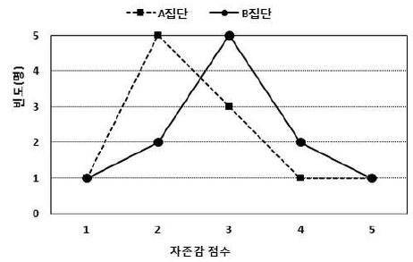
- A집단의 왜도는 0보다 크다.
- A집단의 중앙값은 2이다.
- A집단에서는 중앙값이 평균보다 크다.
- B집단의 왜도는 0이다.
- B집단의 평균은 A집단의 평균보다 크다.
(정답률: 50%)
41. 상담자 A는 전국에서 최근 1년 동안 상담 받은 경험이 있는 사람을 전집으로 설정하고 연구대상을 표집하였다. 다음에 해당하는 표집방법은?
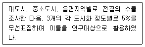
- 체계적 표집
- 의도적 표집
- 단계적 표집
- 할당표집
- 유층표집
(정답률: 41%)
42. 상담자의 4가지 유형(A, B, C, D) 중 내담자가 가장 선호하는 유형이 내담자의 성(남, 여)에 따라서 차이가 있는지 보기 위해 200명의 내담자를 대상으로 조사하였다. 검정통계량 X2값이 5.0이고 자유도에 따른 P(X2≥5.0)의 값이 표와 같다고 할 때, X2검정에서의 유의확률은?
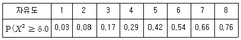
- 0.03
- 0.17
- 0.66
- 0.83
- 0.97
(정답률: 27%)
43. 중2증후군 척도를 개발하는 과정에서 기존에 타당성이 입증된 척도와 상관을 통해 검증 할 수 있는 것은?
- 공인타당도
- 동형검사 신뢰도
- 검사-재검사 신뢰도
- 안면타당도
- 내용타당도
(정답률: 33%)
44. 자존감에 대한 두 프로그램 P1, P2의 효과를 비교하기 위해 두 집단에 각각 30명씩 배치한 후, 집단별로 P1, P2를 적용하면서 프로그램 실시 이전, 중간, 마무리의 세시점에서 자존감을 반복 측정하였다. 표는 수집한 자료에 대해 이요인 반복측정 분산분석을 실시한 결과이 다. 이에 관한 설명으로 옳은 것을 모두 고른 것은?
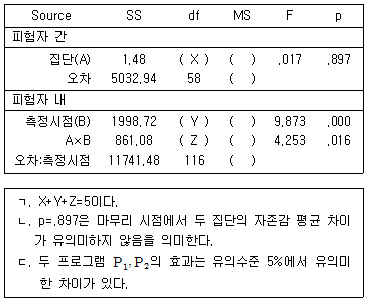
- ㄴ
- ㄷ
- ㄱ, ㄴ
- ㄱ, ㄷ
- ㄱ, ㄴ, ㄷ
(정답률: 13%)
45. 그림은 행복감 관련변수 간의 이론적 인과관계에 대한 연구모형이다. 이에 관한 설명으로 옳지 않은 것은? (단, 직사각형: 측정변수, 화살표: 인과관계)
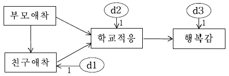
- 자유도는 3이다.
- 간명(overidentified)모형에 해당한다.
- 3개의 내생변수를 가진다.
- 경로분석을 통해 이중매개효과를 검증할 수 있다.
- 부모애착과 친구애착 간의 화살표 방향을 반대로 하더라도 적합도는 변하지 않는다.
(정답률: 10%)
46. 분포에 관한 설명으로 옳은 것은?
- 표준정규분포는 자유도에 따라 그 모양이 달라진다.
- 표준정규분포와 t분포는 첨도가 1이다.
- 자유도가 3인 X2분포는 정적인 편포이다.
- X2값은 0보다 작은 값을 가질 수 있다.
- F분포는 1개의 자유도를 가진다.
(정답률: 20%)
47. 회귀식
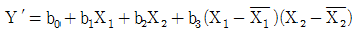
에 관한 설명으로 옳은 것을 모두 고른 것은? (단,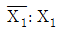
의 평균,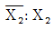
의 평균)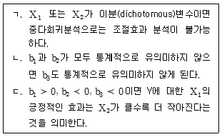
- ㄴ
- ㄷ
- ㄱ, ㄴ
- ㄱ, ㄷ
- ㄱ, ㄴ, ㄷ
(정답률: 4%)
48. 연구자가 연구 참여에 대한 동의를 받는 과정에서 연구 참여자에게 사전 동의를 구해야 하는 것으로 적합하지 않은 것은?
- 연구의 목적, 예상되는 기간 및 절차
- 연구에 참여하거나 중간에 그만둘 수 있는 권리
- 비밀 보장의 한계
- 참여에 대한 보상
- 연구가설 검증을 위한 구체적인 통계 분석방법
(정답률: 49%)
49. 변수 X와 Y 간의 공분산 및 피어슨 적률상관계수에 관한 설명으로 옳은 것을 모두 고른 것은?
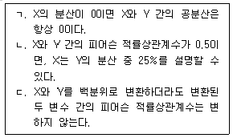
- ㄱ
- ㄷ
- ㄱ, ㄴ
- ㄴ, ㄷ
- ㄱ, ㄴ, ㄷ
(정답률: 25%)
50. 자살생각 예방프로그램이 자살생각에 효과가 있는지 검증하기 위해 10명의 내담자를 무선표집하여 이들을 대상으로 프로그램 실시 이전, 중간, 마무리의 세 시점에서 자살생각을 반복 측정하였다. 효과 검증에 활용할 수 있는 가장 적합한 비모수 통계방법은?
- Mann-Whitney U 검정
- Friedman 검정
- Wilcoxon 검정
- Kruskal-Wallis 검정
- 반복측정 분산분석
(정답률: 38%)
3과목: 심리측정 평가의 활용
51. 심리적 구성개념(construct)에 관한 설명으로 옳은 것은?
- 직접 관찰하여 측정한다.
- 물리적 속성과 달리 인간의 행동을 설명하기 위한 추상적 개념이다.
- 심리적 구성개념을 규칙에 따라 대상의 속성에 수를 할당하는 것은 조작적 정의이다.
- 일반적으로 한 가지 구성개념은 한 가지 행동으로 대응하여 측정된다.
- 행동전집을 통해 객관적으로 측정한다.
(정답률: 49%)
52. 가드너(H. Gardner)의 다중지능이론에 해당하지 않는 것은?
- 미술 지능
- 대인관계 지능
- 신체 - 운동 지능
- 언어 지능
- 논리 - 수학 지능
(정답률: 44%)
53. 심리검사에 관한 설명으로 옳은 것은?
- Stanford-Binet 검사는 정신연령 개념이 최초로 도입된 검사이다.
- 웩슬러(Wechsler) 지능검사는 비율 IQ 개념이 최초로 도입된 검사이다.
- 스피어만(C. Spearman)은 정신검사라는 용어를 처음으로 사용하였다.
- BGT는 개발 당시 지적장애를 진단하는 것이 목적이었다.
- Binet-Simon 검사는 언어능력 이외에 감각 및 지각능력도 측정하였다.
(정답률: 10%)
54. 면담에 관한 설명으로 옳은 것은?
- 구조화된 면담에서는 면담자의 개입이 최소화된다.
- 비구조화된 면담에서는 면담자의 주관적 추론이 개입될 여지가 매우 적다.
- 정신상태평가는 행동주의의 원리에 근거하여 개발된 면담법이다.
- 검사 장면에서 개방형 질문은 수검자의 풍부한 반응을 이끌어낼 가능성이 낮다.
- 구조화된 면담에서는 개방형 질문이 폐쇄형 질문보다 더 많이 사용된다.
(정답률: 30%)
55. 행동평가에서 행동관찰 시 사용되는 코딩방법으로 옳은 것을 모두 고른 것은?
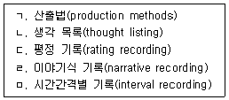
- ㄱ, ㄷ
- ㄱ, ㅁ
- ㄴ, ㄷ, ㄹ
- ㄷ, ㄹ, ㅁ
- ㄱ, ㄴ, ㄹ, ㅁ
(정답률: 58%)
56. 심리검사 및 평가에 관한 윤리사항으로 옳지 않은 것은?
- 법률에 의해 검사가 위임된 경우라 하더라도 수검자로부터 평가 동의를 받은 후 검사를 시행해야 한다.
- 검사 자격을 갖추지 못한 사람에게 평가도구가 판매되지 않도록 해야 한다.
- 수검자를 다른 기관으로 의뢰할 경우 해당 기관의 전문가에게 검사자료를 제공할 수 있다.
- 타당도와 신뢰도가 검증되지 않은 평가도구를 사용하는 경우 검사결과 및 해석의 장ㆍ단점을 기술한다.
- 표준화 검사라 하더라도 결과를 해석할 때는 검사에 영향을 미칠 수 있는 상황이나 개인의 언어적, 문화적 차이를 고려한다.
(정답률: 28%)
57. 내담자가 가진 문제에 따른 심리검사 선정이 가장 적절한 것은?
- 남자 대학생의 병리적 성격을 진단하기 위하여 MBTI를 사용하였다.
- 입원중인 알코올중독자의 뇌 손상을 진단하기 위하여 SCT를 실시하였다.
- 7세 아동의 선천적ㆍ후천적 지능의 불균형을 탐색하기 위하여 K-ABC를 사용하였다.
- 남자 고등학생의 전반적 지능을 평가하기 위하여 16PF를 실시하였다.
- 50대 주부의 적응장애를 진단하기 위하여 BGT를 실시하였다.
(정답률: 56%)
58. 최대수행능력을 측정하는 검사로 옳지 않은 것은?
- K-WISC-Ⅳ
- 학업성취도 검사
- MMPI-2
- 적성검사
- 창의력검사
(정답률: 58%)
59. 중학생 A는 평균 20점, 표준편차 4점, 측정의 표준오차 3점인 자존감 검사에서 14점이 나왔다. 자존감 검사가 정규분포라고 가정할 때 A의 점수의 위치에 관한 설명으로 옳은 것은?
- T점수 40점에 해당한다.
- Z점수 -1.5에 해당한다.
- 백분위 2에 해당한다.
- 웩슬러(Wechsler) 지능검사의 전체 IQ 70점에 해당한다.
- 웩슬러(Wechsler) 지능검사의 소검사 환산점수 7점에 해당한다.
(정답률: 34%)
60. 표준편차에 관한 설명으로 옳은 것을 모두 고른 것은?
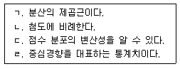
- ㄱ, ㄷ
- ㄴ, ㄹ
- ㄱ, ㄴ, ㄷ
- ㄱ, ㄷ, ㄹ
- ㄴ, ㄷ, ㄹ
(정답률: 34%)
61. 새로운 우울증 검사의 개발과 관련된 타당도와 신뢰도에 관한 설명으로 옳지 않은 것은?
- 수렴타당도를 구하기 위해 기존의 우울증 검사와 새로운 우울증 검사의 상관계수를 산출하였다.
- 변별타당도를 구하기 위해 기존의 분노 검사와 새로운 우울증 검사의 상관계수를 산출하였다.
- 반분신뢰도를 구하기 위해 새로운 우울증 검사의 홀수 문항과 짝수 문항 간 상관계수를 산출하였다.
- 검사-재검사 신뢰도를 구하기 위해 기존의 우울증 검사를 실시하고 1달 후 새로운 검사를 실시하여 상관계수를 산출하였다.
- 예측타당도를 구하기 위해 새로운 우울증 검사를 실시하고 1년 후 자살충동 검사를 실시하여 상관계수를 산출하였다.
(정답률: 32%)
62. K-WAIS-Ⅳ에서 시간제한이 있는 검사를 모두 고른 것은?
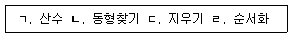
- ㄱ, ㄴ
- ㄱ, ㄴ, ㄷ
- ㄱ, ㄷ, ㄹ
- ㄴ, ㄷ, ㄹ
- ㄱ, ㄴ, ㄷ, ㄹ
(정답률: 40%)
63. 다음 사례와 가장 일치하는 MMPI-A의 코드 유형은?
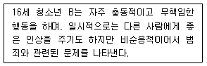
- 1-3
- 2-7
- 3-8
- 4-9
- 7-8
(정답률: 66%)
64. K-WISC-Ⅳ의 핵심 및 보충 소검사에 관한 설명으로 옳지 않은 것은?
- 상식은 언어이해 지표의 핵심 소검사이다.
- 빠진곳찾기는 지각추론 지표의 보충 소검사이다.
- 선택은 처리속도 지표의 보충 소검사이다.
- 산수는 작업기억 지표의 보충 소검사이다.
- 토막짜기는 지각추론 지표의 핵심 소검사이다.
(정답률: 27%)
65. 초등학교 3학년 C는 K-WISC-Ⅳ와 읽기 학업성취도 검사를 실시하고 면담과 행동관찰을 통해 ‘특정 학습장애-읽기 손상 동반’을 진단받았다. 진단받은 C의 검사 결과로 가장 적절한 것은?
- 전체 IQ: 62, 학업성취도 백분위: 5
- 전체 IQ: 62, 학업성취도 백분위: 16
- 전체 IQ: 71, 학업성취도 백분위: 2
- 전체 IQ: 102, 학업성취도 백분위: 2
- 전체 IQ: 109, 학업성취도 백분위: 48
(정답률: 33%)
66. K-WAIS-Ⅳ의 동형찾기와 기호쓰기 소검사에 관한 설명으로 옳은 것은?
- 기호쓰기는 병전 지능을 추정할 때 주된 지표로 사용된다.
- 동형찾기는 연습문항의 점수가 원점수 총점에 포함된다.
- 시공간 정보의 평가, 비언어적 자극 정보에 대한 통합, 세부 요소에 대해 집중하는 능력이 필요한 지표 점수에 공통적으로 포함되는 소검사이다.
- 계획 능력, 시각-운동 협응능력을 공통적으로 측정한다.
- 검사 결과에 공통적으로 영향을 미치는 요소는 불안, 주의산만 등이 있다.
(정답률: 48%)
67. MMPI-2 척도 해석에 관한 설명으로 옳지 않은 것은?
- L척도가 의미있게 상승할 경우 자신의 증상이나 문제를 부인할 가능성이 높다.
- K척도가 매우 낮을 경우 스트레스나 일상생활의 요구에 대처할 수 있는 자원이 제한되어 있을 가능성이 있다.
- 척도 6과 척도 8이 동반 상승할 경우 경계심과 의심이 많고 피해적 사고, 망상, 환각 등이 나타날 가능성이 있다.
- 척도 6의 단독 상승은 척도 4의 단독 상승보다 사회전반에 대한 불평, 불만 및 권위적 대상에 대한 분노와 적대감이 나타날 가능성이 더 높다.
- 척도 9가 매우 낮을 경우 겉으로는 우울한 감정을 표현하지 않더라도 우울증상을 탐색해 볼필요가 있다.
(정답률: 57%)
68. 객관적 성격검사에 관한 설명으로 옳은 것은?
- NEO-PI-R의 개방성척도는 과제를 수행하는 목표지향적 행동과 자기통제력을 평가하는 척도이다.
- TCI의 인내력(P)척도는 성격척도이다.
- PAI의 공격성(AGG)척도는 치료고려척도이다.
- 16PF는 융(C. Jung)의 성격이론을 기반으로 개발되었다.
- K-CBCL의 학업수행척도는 문제행동증후군척도의 하위척도이다.
(정답률: 40%)
69. PAI에 관한 설명으로 옳지 않은 것은?
- MMPI-2와 달리 척도들 간에 중복문항이 없다.
- 각 문항에 대해 4점 척도로 평정한다.
- 하위척도들이 있어서 측정하고자 하는 증상의 상대적 속성을 평가할 수 있다.
- 치료계획의 수립과 시행 및 평가에 관한 구성개념을 측정한다.
- 비지지(NON)척도는 대인관계척도에 해당한다.
(정답률: 32%)
70. MMPI-2에서 신체장애 등급을 받거나 상해관련 소송에서 증상의 과장 또는 가장을 탐지 할 목적으로 개발된 척도는?
- L척도
- FB척도
- FP척도
- S척도
- FBS척도
(정답률: 54%)
71. 허트(M. Hutt)의 BGT에서 양적으로 채점되는 경우를 모두 고른 것은?
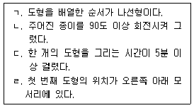
- ㄱ, ㄴ
- ㄷ, ㄹ
- ㄱ, ㄴ, ㄹ
- ㄴ, ㄷ, ㄹ
- ㄱ, ㄴ, ㄷ, ㄹ
(정답률: 40%)
72. HTP 검사해석에 관한 설명으로 옳은 것은?
- 필압이 강한 사람은 약한 사람에 비해 억제된 성격일 가능성이 높다.
- 지우개를 과도하게 많이 사용한 사람은 대부분 자신감이 높다.
- 집 그림 중에서 창과 창문은 내적 공상 활동에 대한 정보를 제공하는 중요한 지표이다.
- 나무의 가지와 사람의 팔은 대인관계에 대한 욕구를 탐색할 수 있는 정보를 제공한다.
- 나무를 하나의 선으로 열쇠구멍()처럼 그린 경우는 일반적으로 검사태도가 호의적이고 긍정적임을 나타낸다.
(정답률: 61%)
73. TAT에 관한 설명으로 옳지 않은 것은?
- 통각은 객관적 자극과 주관적 경험의 상호작용으로 이루어진다.
- Murray의 욕구-압력 분석법의 기본 가정은 욕구와 초자아가 상호작용한다는 것이다.
- 모든 수검자에게 동일한 카드를 제공하지 않는다.
- 수검자의 상황에 따라 지시문을 다르게 제시할 수 있다.
- 검사는 두 번으로 나누어 시행할 수 있다.
(정답률: 35%)
74. 로샤(Rorschach)검사의 구조변인에 대한 해석적 연결이 옳은 것을 모두 고른 것은?
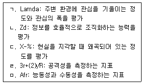
- ㄱ, ㄴ
- ㄷ, ㄹ
- ㄱ, ㄴ, ㄷ
- ㄴ, ㄷ, ㄹ, ㅁ
- ㄱ, ㄴ, ㄷ, ㄹ, ㅁ
(정답률: 35%)
75. 다음에 제시한 로샤(Rorschach)검사 반응 중 병적 반응(morbid content, MOR)에 해당하는 것은?
- 매우 화가 난 곰
- 부서진 꽃병
- 해부학 시간에 배운 신경구조
- 아름다운 노란색 나비
- 평화를 상징하는 비둘기
(정답률: 52%)
4과목: 이상심리
76. 이상심리의 이론적 모형에 관한 설명으로 옳지 않은 것은?
- 양극성 장애와 조현병은 유전을 비롯한 생물학적 요인에 영향을 받는다.
- 행동주의자들은 부적응 행동이 학습의 원리에 따라 형성된다고 제안하였다.
- 실존주의자들은 정신장애가 뇌의 생화학적 이상에 의해서 유발된다고 본다.
- 인지이론가들은 비합리적 신념과 역기능적 사고가 이상 행동에 영향을 준다고 본다.
- 사회문화적 모형에서는 가정ㆍ사회문화적 요인이 부적응 행동에 미치는 영향을 강조한다.
(정답률: 66%)
77. 프로이트(S. Freud)의 정신분석이론에 관한 설명으로 옳지 않은 것은?
- 인간의 성격을 원초아, 자아, 초자아로 구분하는 삼원구조 이론을 제시하였다.
- 이상행동의 원인을 어린 시절의 경험에 뿌리를 둔 무의식적 갈등으로 설명한다.
- 정신분석치료의 목표는 원초아의 영향력을 강화시키는 데 있다.
- 인간의 모든 행동은 우연히 일어나지 않고, 원인이 있다는 정신결정론을 가정한다.
- 발달과정에서 결핍이나 과잉충족은 성격형성에 영향을 준다.
(정답률: 67%)
78. 정신장애의 평가에 관한 설명으로 옳은 것을 모두 고른 것은?
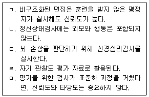
- ㄱ, ㅁ
- ㄴ, ㄷ
- ㄷ, ㄹ
- ㄱ, ㄷ, ㄹ
- ㄴ, ㄹ, ㅁ
(정답률: 45%)
79. 정신장애의 진단에 관한 설명으로 옳지 않은 것은?
- 미국 정신의학회(APA)가 발간한 분류체계는 DSM이다.
- DSM-5는 장애의 증상보다 원인에 더 초점을 두었다.
- 진단은 사회적이고 문화적인 부분을 고려해야 한다.
- 세계보건기구(WHO)에서 개발한 분류체계는 ICD이다.
- 진단은 개인에게 낙인을 찍을 수 있으므로 신중해야 한다.
(정답률: 62%)
80. 지적장애에 관한 설명으로 옳지 않은 것은?
- 지적장애는 신경발달장애의 하위 유형이다.
- 지적 기능의 결함뿐만 아니라 적응 기능의 결함도 진단기준이다.
- 개념, 사회, 실행 영역에 해당되는 기능이 현저히 떨어진다.
- 심각도에 따라 5등급으로 분류된다.
- 염색체의 이상에 의해 유발되는 지적장애의 하나로 다운증후군이 있다.
(정답률: 52%)
81. 신경발달장애에 관한 설명으로 옳은 것을 모두 고른 것은?
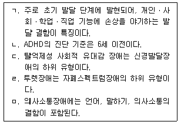
- ㄱ, ㄹ
- ㄱ, ㅁ
- ㄱ, ㄷ, ㅁ
- ㄴ, ㄷ, ㄹ
- ㄴ, ㄹ, ㅁ
(정답률: 54%)
82. 조현병에 관한 설명으로 옳은 것은?
- 환각만으로도 진단될 수 있다.
- 장애의 임상적 징후가 최소 3개월 동안 계속되어야 진단될 수 있다.
- 무의욕증과 무쾌감증은 양성증상에 해당된다.
- 뇌실의 확장이 관찰되기도 한다.
- 가장 흔한 환각은 환시이다.
(정답률: 50%)
83. 망상장애에 관한 설명으로 옳지 않은 것은?(오류 신고가 접수된 문제입니다. 반드시 정답과 해설을 확인하시기 바랍니다.)
- 최소 1개월 동안 지속된 한 가지 이상의 망상이 존재한다.
- 망상의 직접적 영향을 제외하면, 적응 기능이 현저히 손상되어 있고 명백하게 기이한 행동이 나타난다.
- 아형으로 피해형, 색정형, 과대형, 질투형 등이 있다.
- 조증 삽화가 일어나는 경우, 조증 삽화의 기간은 망상이 발생하는 지속 기간에 비하여 상대적으로 짧다.
- 현재의 심각도는 0(증상 없음)에서 4(심각한 증상)까지 평가한다.
(정답률: 52%)
84. 우울 및 양극성 장애에 관한 설명으로 옳지 않은 것은?
- 조증 삽화와 주요우울 삽화는 제 1형 양극성 장애를 진단하는 필수 조건이다.
- 세로토닌의 수준이 낮으면 우울이 유발될 수 있다.
- 벡(A. Beck)은 자기 자신, 주변 환경, 미래에 대한 부정적 관점이 우울을 유발한다고 하였다.
- 리튬은 양극성 장애의 치료 약물로 알려져 있다.
- 코르티솔(cortisol) 수준이 높아지면 우울이 유발될 수 있다.
(정답률: 17%)
85. 월경전불쾌감장애에 관한 설명으로 옳지 않은 것은?
- DSM-5에 새롭게 추가되었다.
- 진단을 위해서는 연속되는 2개월 이상의 일일 증상 기록이 필요하다.
- 신체적 증상, 심각한 기분변화, 불안 등이 나타난다.
- 증상이 월경 시작 1주 전에 나타나며, 월경이 끝난 후에는 최소화되거나 없어져야 진단된다.
- 일반적으로 폐경에 가까워질수록 증상은 경감된다.
(정답률: 25%)
86. 불안장애에 관한 설명으로 옳은 것을 모두 고른 것은?
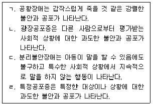
- ㄱ, ㄴ
- ㄱ, ㄷ
- ㄴ, ㄷ
- ㄱ, ㄹ
- ㄴ, ㄹ
(정답률: 56%)
87. 분리불안장애에 관한 설명으로 옳지 않은 것은?
- 학령기 아동에서는 학교에 가기 싫어하거나 등교 거부로 나타난다.
- 행동치료, 놀이치료, 가족치료 등을 통하여 호전될 수 있다.
- 부모의 양육행동, 아동의 유전적 기질, 인지행동적 요인 등이 영향을 미친다.
- 지나치게 밀착된 가정에서 자랐거나 의존적인 성향의 아이에게 나타날 수 있다.
- 성인의 경우 증상이 1개월 이상 나타날 때 진단될 수 있다.
(정답률: 67%)
88. 다음 사례에 적절한 진단명은?
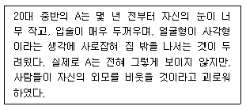
- 외상후 스트레스장애
- 적응장애
- 범불안장애
- 주요우울장애
- 신체변형(이형)장애
(정답률: 48%)
89. 강박장애에 관한 설명으로 옳지 않은 것은?
- 강박적 믿음이 진실이 아니라고 확신하는 경우는 병식이 양호한 편이다.
- 안와 전두피질이나 기저핵의 기능 이상이 관련될 수 있다.
- 프로이트(S. Freud)는 항문기 단계에 그 기원이 있다고 주장한다.
- 행동치료기법의 하나로 노출 및 반응 방지법이 있다.
- 아동기에는 남아보다 여아의 유병율이 더 높다.
(정답률: 48%)
90. 신체증상 및 관련 장애에 관한 설명으로 옳은 것을 모두 고른 것은?
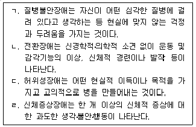
- ㄱ, ㄴ
- ㄴ, ㄷ
- ㄱ, ㄴ, ㄹ
- ㄱ, ㄷ, ㄹ
- ㄴ, ㄷ, ㄹ
(정답률: 29%)
91. 다음 사례에 적절한 진단명은?
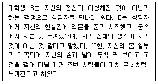
- 이인성장애
- 신경인지장애
- 분열형 성격장애
- 해리성 기억상실
- 해리성 정체감장애
(정답률: 59%)
92. 신경성 폭식증에 관한 설명으로 옳지 않은 것은?
- 폭식을 하지만 부적절한 보상 행동을 반복적으로 하지 않는 사람의 경우도 해당된다.
- 삽화 기간 동안 먹는 것에 대한 조절 능력의 상실감을 느낀다.
- 일반적으로 청소년기 혹은 성인기 초기에 시작된다.
- 신경성 식욕부진증의 삽화 기간과 겹치면 진단되지 않는다.
- 자기평가에서 체형과 체중을 지나치게 강조하며, 이러한 요인이 자존감을 결정하는 데 있어 가장 중요하다.
(정답률: 39%)
93. 사건수면(parasomnia)에 해당되는 것은?
- 불면장애
- 악몽장애
- 기면증
- 호흡 관련 수면장애
- 일주기 리듬 수면-각성장애
(정답률: 49%)
94. 성관련 장애에 관한 설명으로 옳은 것은?
- 성별불쾌감의 아형에는 평생형/후천형, 전반형/상황형이 있다.
- 성욕장애 또는 흥분장애로 진단되기 위해서는 최소 6개월의 지속 기간이 있어야 한다.
- 동성애자는 성별불쾌감에 해당된다.
- 한 개인이 두 가지 이상의 변태 성욕을 보이는 경우는 거의 없다.
- 관음장애는 만 12세 이상일 때 진단된다.
(정답률: 42%)
95. 도박장애에 관한 설명으로 옳지 않은 것은?
- 도박을 줄이거나 멈추고자 할 때 불안감과 짜증을 경험한다.
- 흥분이나 쾌감 등을 얻기 위하여 점점 더 많은 돈으로 도박하는 내성을 보인다.
- 대부분 인지기능이 잘 유지되고 있어서, 치료가 쉽고 재발률이 낮다.
- AA(Alcoholics Anonymous)를 모델로 해서 만든 자조집단인 GA(Gamblers Anonymous)가 회복에 도움이 된다.
- 합법적인 도박 뿐만 아니라 인터넷이나 스마트폰 등을 사용한 불법도박도 심각한 사회문제를 일으킨다.
(정답률: 48%)
96. 다음 사례에 적절한 진단명은?
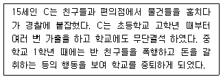
- 적대적 반항장애
- 상동증적 운동장애
- 자폐스펙트럼장애
- 품행장애
- 반사회성 성격장애
(정답률: 63%)
97. 알코올 사용장애에 관한 설명으로 옳은 것은?
- 가족력이나 유전과는 관련성이 거의 없다.
- 재발이나 회복에 미치는 가족의 영향력은 미미하다.
- 자살, 사고, 폭력과의 관련성이 거의 없다.
- 금단 증상의 불쾌한 경험을 피하거나 경감시키기 위해 음주를 지속하게 된다.
- 집단상담은 효과가 없어 실시하지 않는다.
(정답률: 63%)
98. 다음 증상들이 나타날 때 적절한 진단명은?
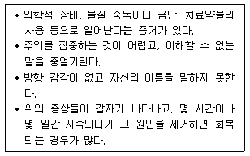
- 섬망
- 경도신경인지장애
- 주요신경인지장애
- 이인증
- 해리성 정체감장애
(정답률: 60%)
99. 다음 사례에 해당하는 성격장애는?
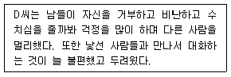
- 경계성 성격장애
- 분열형 성격장애
- 의존성 성격장애
- 강박성 성격장애
- 회피성 성격장애
(정답률: 64%)
100. 성격장애의 분류가 올바르게 연결되어 있지 않은 것은?
- A군: 분열성 성격장애
- B군: 연극성 성격장애
- C군: 편집성 성격장애
- A군: 분열형 성격장애
- B군: 반사회성 성격장애
(정답률: 47%)